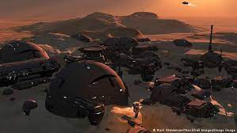

💀Viajes No Regresarás💀
Orientado por:

💀Viajes No Regresarás💀
Orientado por:
Marte es el cuarto planeta en orden de distancia al Sol y el segundo más pequeño del sistema solar, después
de Mercurio. Recibió su nombre en homenaje al dios de la guerra de la mitología romana (Ares en la mitología
griega), y también es conocido como «el planeta rojo» debido a la apariencia rojiza que le confiere el
óxido de hierro predominante en su superficie. Marte es el planeta interior más alejado del Sol. Es un
planeta telúrico con una atmósfera delgada de dióxido de carbono, y tiene dos satélites pequeños y de forma
irregular, Fobos y Deimos (hijos del dios griego), que podrían ser asteroides capturados similares al
asteroide troyano (5261) Eureka. Sus características superficiales recuerdan tanto a los cráteres de la Luna
como a los valles, desiertos y casquetes polares de la Tierra.
El periodo de rotación y los ciclos estacionales son similares a los de la Tierra, ya que la inclinación es
lo que genera las estaciones. Marte alberga el Monte Olimpo, la montaña y el volcán más grande y alto
conocido en el sistema solar, y los Valles Marineris, uno de los mayores cañones del sistema solar. La llana
cuenca Boreal en el hemisferio norte cubre el 40% del planeta y puede ser característica de un gigantesco
impacto. Aunque en apariencia podría parecer un planeta muerto, no lo es. Sus campos de dunas siguen
siendo mecidos por el viento marciano, sus casquetes polares cambian con las estaciones e incluso parece que
hay algunos pequeños flujos estacionales de agua.
